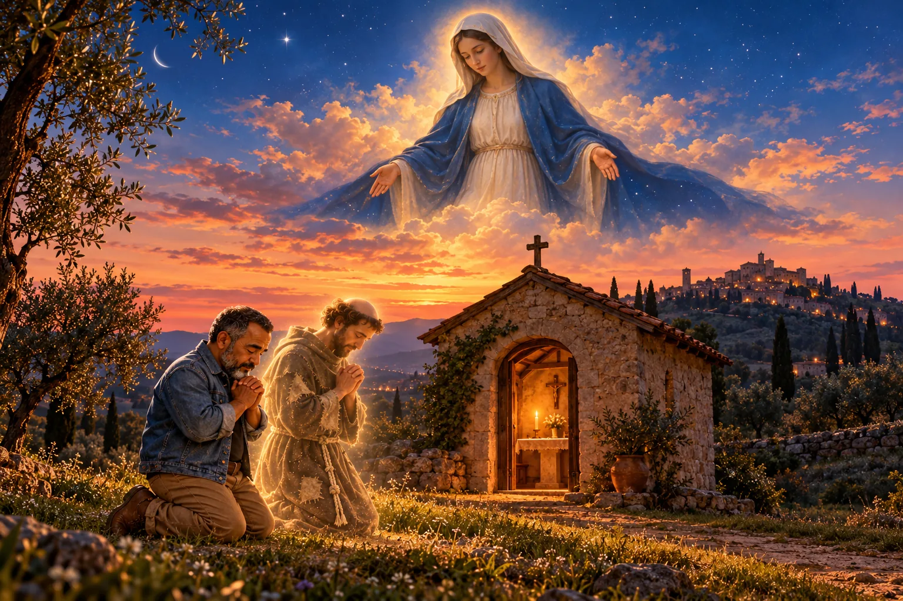

Saudação à Virgem Maria: salve, Senhora, santa Rainha
Com as palavras do anjo no coração, São Francisco saudou Nossa Senhora como palácio, casa, veste, serva e Mãe de Deus. Uma oração curta e cheia de ternura para rezar sob o manto de Maria.

Francisco e Nossa Senhora
O lugar mais querido de São Francisco no mundo era uma capelinha de pedra na planície abaixo de Assis: a Porciúncula, dedicada a Santa Maria dos Anjos. Ele mesmo a restaurou com as próprias mãos, foi ali que ouviu o Evangelho que mudou a sua vida, ali nasceu a Ordem e ali ele quis morrer. Segundo o seu primeiro biógrafo, Tomás de Celano, Francisco tinha por Maria um amor indizível, porque foi ela quem fez do Senhor da majestade nosso irmão.
A Saudação à Virgem Maria é uma das orações que ele nos deixou. É curta, quase uma ladainha, e começa como o anjo Gabriel começou: “Ave”. No Evangelho de Lucas, o anjo diz: “Ave, cheia de graça, o Senhor é contigo” (Lucas 1,28). Francisco aprendeu a saudar Maria com as palavras do anjo e foi acrescentando as suas.
A oração
Salve, Senhora, santa Rainha,
santa Mãe de Deus, Maria,
que és a virgem feita Igreja,
escolhida pelo santíssimo Pai do céu,
que te consagrou com o seu santíssimo e amado Filho
e com o Espírito Santo Paráclito;
em ti esteve e está toda a plenitude da graça e todo o bem.
Salve, palácio dele;
salve, tabernáculo dele;
salve, casa dele.
Salve, veste dele;
salve, serva dele;
salve, Mãe dele.
E salve, vós todas, santas virtudes,
que, pela graça e iluminação do Espírito Santo,
sois derramadas no coração dos fiéis,
para que, de infiéis, os torneis fiéis a Deus.
Tradução de A Boa Idade a partir do texto original em latim, que começa assim: “Ave Domina, sancta Regina, sancta Dei genitrix Maria, quae es virgo ecclesia facta…”
Para entender a oração
- Palácio, tabernáculo e casa: Maria guardou Deus dentro de si, como uma casa guarda quem mora nela. O tabernáculo era a tenda onde Deus habitava no meio do seu povo, no deserto.
- Veste: foi dela que o Filho de Deus recebeu a carne humana, como quem veste uma roupa para poder caminhar entre nós.
- Serva e Mãe: os dois títulos lado a lado. Maria disse ao anjo “Eis aqui a serva do Senhor” (Lucas 1,38), e foi justamente por essa humildade que se tornou Mãe de Deus.
- “Virgem feita Igreja”: Maria acolheu Jesus antes de todos e o deu ao mundo. É isso que a Igreja é chamada a ser, e por isso ela é o seu modelo.
- As santas virtudes: no final, Francisco saúda as virtudes que Deus derrama no coração dos fiéis, como se elas também fossem filhas da mesma casa. Quem se aproxima de Maria aprende a fé, a humildade e a caridade.
Uma palavra do Sr. Oliveira
Ave, cheia de graça!
Salve a Mãe do nosso Senhor, que deu a vida para o perdão dos nossos pecados. Salve aquela que assistiu ao martírio do seu Filho amado e teve o coração de mãe transpassado de dor, como o velho Simeão lhe havia anunciado. E, ainda assim, obediente, aceitou o destino daquele que gerou no seu ventre virgem, ainda menina, pura e escolhida por Deus.
Francisco a amava com ternura de filho. Foi na capelinha dedicada a ela, Santa Maria dos Anjos, que ele começou a sua caminhada e foi ali que quis terminá-la.
Que todo joelho se dobre diante do nome de Jesus, e que todo coração agradecido se lembre com carinho daquela que sempre intercedeu, e intercede, por nós junto ao seu Filho.
Louvada seja Nossa Senhora, Rainha do céu e da terra.
Para rezar hoje
Reze a Saudação devagar e, depois de cada “salve”, faça uma pequena pausa. Quando chegar em “salve, casa dele”, pense na sua própria casa e peça a Maria que ela também seja um lugar onde Deus possa morar. E termine, como tantas mães e avós nos ensinaram, com uma Ave-Maria.
Reze também as outras orações de Francisco: Oração diante do Crucifixo, Cântico das Criaturas e Louvores ao Deus Altíssimo. E conheça a história completa dele em São Francisco de Assis: do filho do rico comerciante ao Pobrezinho de Deus.